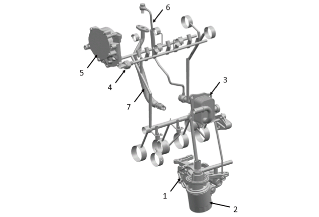

润滑说明

发动机由一个二级可变排量机油泵（1）提供机油润滑。机油泵安装在油底壳下部，通过一个发动机控制模块（ECM）控制的电磁阀实现二级排量可变。
机油泵泵出的机油首先经过机油滤清器（2）过滤杂质，然后进入机油冷却器（3）冷却，冷却后的机油先流入缸体主油道，曲轴，连杆和活塞冷却喷嘴，再往上流入缸盖油道，凸轮轴，可变气门正时系统（VVT），真空泵（5）和增压器。发动机通过安装在缸盖进气侧的机油压力传感器（4）监控机油压力。
曲轴通过轴瓦表面的油道提供润滑；连杆通过连接曲轴轴颈和连杆轴颈的油道提供润滑;正时链条张紧器通过缸体主油道末端油道提供润滑。
凸轮轴通过连接缸盖油道和凸轮轴轴瓦之间的油道提供润滑；真空泵通过排气侧缸盖油道提供润滑；可变气门正时系统（VVT）通过连接缸体主油道的单独油道提供润滑。
增压器通过连接缸体主油道的进油管（6）提供润滑，润滑后的机油通过回油管（7）回油至油底壳。